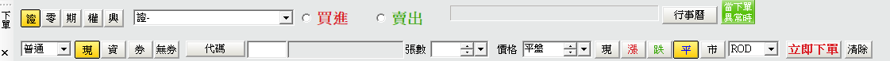
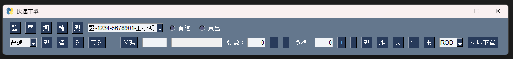

使用 PySimpleGUI 3 分鐘製作下單程式
December 20, 2023

券商 API 與 PySimpleGUI
PySimpleGUI1 顧名思義就是非常簡單，它是建立在 Tkinter 與 Qt 之上，更加簡便
由於台股大多數券商 API 都是提供 dll 接到 Python 中，因此都要自己起事件循環
最好的方式就是搭一個簡單的 GUI 程式來學習券商 API
如果不想要花太多時間學習 GUI 開發，PySimpleGUI 就非常方便
快速復刻超級贏家下單介面
超級贏家的下單介面類似這樣：

PySimpleGUI 就是一行就是一個 list，超贏這個就是兩個 list：
import PySimpleGUI as sg
# 選項設置
accounts = ["證-1234-5678901-王小明 "]
flags = ["普通 ", "盤後 "]
tradeTypes = ["ROD ", "IOC ", "FOK "]
# 建立每個控件
layout = [
[
sg.Button("證"),
sg.Button("零"),
sg.Button("期"),
sg.Button("權"),
sg.Button("興"),
sg.Combo(accounts, default_value=accounts[0], key="-ACCOUNT-"),
sg.Radio("買進", "RadioBuysell", key="-RADIO-BUY-"),
sg.Radio("賣出", "RadioBuysell", key="-RADIO-SELL-"),
],
[
sg.Combo(flags, default_value=flags[0], key="-FLAG-"),
sg.Button("現"),
sg.Button("資"),
sg.Button("券"),
sg.Button("無券"),
sg.Text("", size=(1, 1)),
sg.Button("代碼"),
sg.InputText(size=(7, 1), key="-SYMBOL-CODE-"),
sg.InputText(
size=(15, 1), disabled=True, background_color="gray", key="-SYMBOL-NAME-"
),
sg.Text("張數：", size=(4, 1)),
sg.InputText("0", key="-VOLUME-", size=(5, 1), justification="right"),
sg.Button("+", key="-INCREASE-VOLUME-"),
sg.Button("-", key="-DECREASE-VOLUME-"),
sg.Text("價格：", size=(4, 1)),
sg.InputText("0", key="-PRICE-", size=(5, 1), justification="right"),
sg.Button("+", key="-INCREASE-PRICE-"),
sg.Button("-", key="-DECREASE-PRICE-"),
sg.Button("現", key="-PRICE-CURRENT-"),
sg.Button("漲", key="-PRICE-UP-"),
sg.Button("跌", key="-PRICE-DOWN-"),
sg.Button("平", key="-PRICE-FLAT-"),
sg.Button("市", key="-PRICE-MARKET-"),
sg.Combo(tradeTypes, default_value=tradeTypes[0], key="-TRADE-TYPES-"),
sg.Button("立即下單", key="-SEND-ORDER-"),
sg.Button("清除", key="-CLEAR-ALL-"),
],
]這邊我們使用到一些控件，例如按鈕 Button, 文字 Text, 輸入框 InputText, 下拉選單 Combo
最重要就是知道 size 和 key ，分別設定大小和事件觸發時知道是哪裡來的
通常 key 的命名習慣是 -XXX-XXX- 這樣，顏色、預設值也是很直覺與通用的 kwargs
建立完控件之後，就可以建立視窗並啟動事件循環：
window = sg.Window("快速下單", layout, size=(1100, 80))
# 建立事件循環
while True:
event, values = window.read()
if event in (None, "Cancel"):
break
print(f"Event: {event}")
print(str(values))
window.close()
當你點擊或在輸入框打字、下拉選單選取，就會觸發事件
會透過 window.read() 給你 event, values ，例如點擊 立即下單 就會觸發：
# Event: -SEND-ORDER-
# {'-ACCOUNT-': '證-1234-5678901-王小明 ', '-RADIO-BUY-': False,
# '-RADIO-SELL-': False, '-FLAG-': '普通 ', '-SYMBOL-CODE-': '',
# '-SYMBOL-NAME-': '', '-VOLUME-': '0', '-TRADE-TYPES-': 'ROD '}就可以透過事件名稱來源（也就是 key ）與當前視窗的輸入字典資料來完成相關操作
Footnotes
1 PySimpleGUI 到 2023 都仍然開發活躍
GitHub 請見: https://github.com/PySimpleGUI/PySimpleGUI